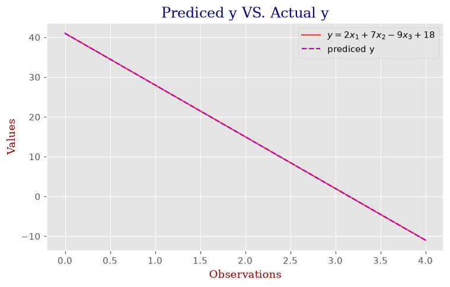
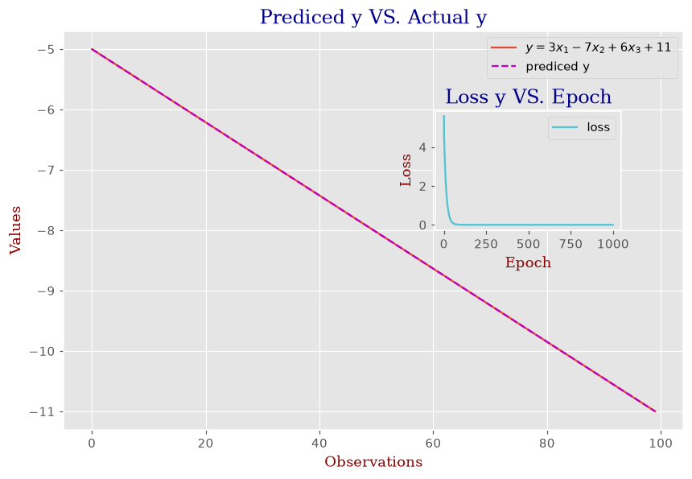
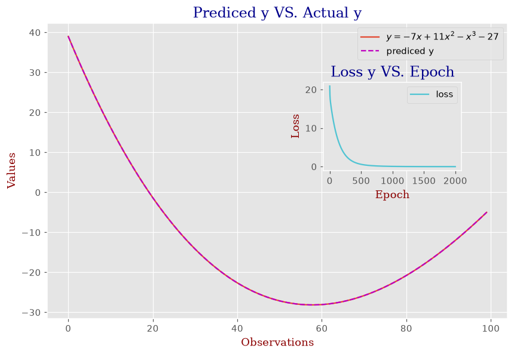
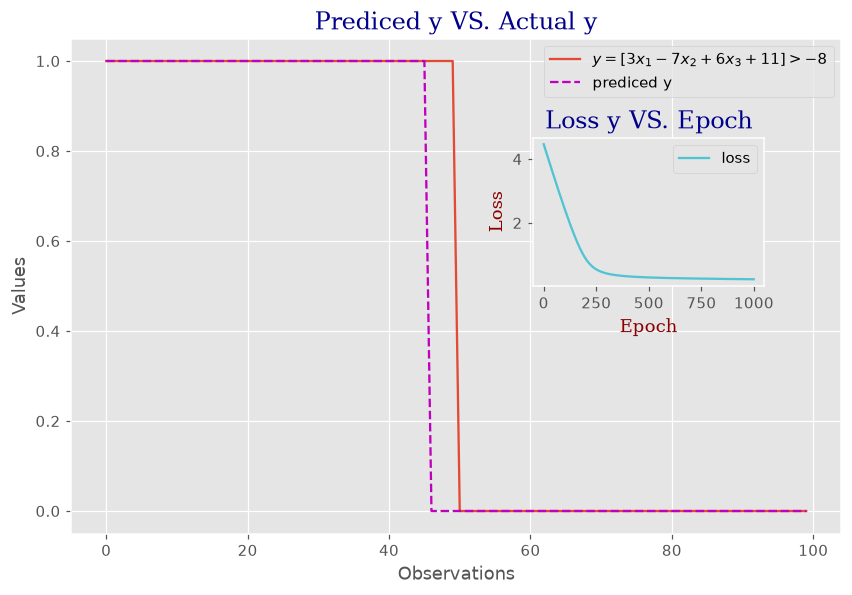

Code
import numpy as np
import pandas as pd
import matplotlib.pyplot as plt
plt.style.use('ggplot')
from sklearn.metrics import accuracy_scoreMomentum strategy is a type of investment approach that aims to capitalize on the continuance of existing market trends. In this strategy, investors buy securities that are already rising and sell them when they appear to have peaked. The underlying belief is that trends can persist for some time, and it’s possible to profit_linear by staying with a trend until its conclusion.
In this blog, we will be focusing on two key tasks related to the momentum strategy: * Linear Regression for Stock Price Prediction: The first task involves using linear regression to predict the price of a stock. Linear regression is a statistical method that allows us to study the relationship between two continuous variables. In this case, we’ll be examining how various factors influence the price of a stock.
import numpy as np
import pandas as pd
import matplotlib.pyplot as plt
plt.style.use('ggplot')
from sklearn.metrics import accuracy_scoreStarts with easy ones, we want some loss functions to determine the performances of models \(MAE = \frac{1}{m}\sum_{i=1}^m\vert y_{pred}\,-\,y_i\vert\)
\(MSE = \frac{1}{m}\sum_{i=1}^m(y_{pred}\,-\,y)^2\)
\(RMSE = \sqrt{\frac{1}{m}\sum_{i=1}^m(y_{pred}\,-\,y)^2}\)
\(MAD = median (\vert y_{pred}\,-\,median (y)\vert)\)
def my_mae(y_pred, y_test):
assert len(y_pred) == len(y_test)
m = len(y_pred)
res = np.abs(y_test-y_pred)
return res.mean()
def my_mse(y_pred, y_test):
assert len(y_pred) == len(y_test)
m = len(y_pred)
res = (y_test-y_pred) ** 2
return res.mean()
def my_rmse(y_pred, y_test):
assert len(y_pred) == len(y_test)
m = len(y_pred)
res = (y_test-y_pred) ** 2
return (res.mean()) ** .5
def my_mad(y_pred, y_test):
assert len(y_pred) == len(y_test)
m = len(y_pred)
res = np.abs(y_pred-np.median(y_test))
return np.median(res)\(f(x_i) = W^Tx\,+\,b~~~→~~~f(x)=w_1x_1+\dots+w_nx_n+b\)
The Formula method:
\(\beta = (X^TX)^{-1}X^TY\)
Where \(\beta\) is: \[
\begin{matrix}
w_1 \\
w_2 \\
\vdots \\
b \\
\end{matrix}
\]
Define the function based on the formula:
def formulaMethod(x, y):
# Add an intercept column.
x_with_bias = np.column_stack([x, np.ones(x.shape[0])])
# lstsq works even when X^T X is singular.
weights, *_ = np.linalg.lstsq(x_with_bias, y, rcond=None)
return weights
def linearPredict(x, weights):
x_with_bias = np.column_stack([x, np.ones(x.shape[0])])
return x_with_bias @ weightsTest the Formula function:
x1 = np.array([9,8,7,6,5])
x2 = np.array([2,3,4,5,6])
x3 = np.array([1,3,5,7,9])
y = 2*x1 + 7*x2 - 9*x3 + 18
data = np.array([x1, x2, x3, y]).T
# print(data)
x = data[:,:-1]
ws = formulaMethod(x, y)
y_pred = linearPredict(x, ws)
rmse = my_rmse(y_pred, y)
print(f"The loss is: {rmse:.2f}")
plt.figure()
plt.title("Prediced y VS. Actual y", fontname='serif', color='darkblue', fontsize=16)
plt.plot(y, label=r'$y = 2x_1 + 7x_2 - 9x_3 + 18$')
plt.plot(y_pred, 'm--', label='prediced y')
plt.xlabel("Observations", fontname='serif', color='darkred')
plt.ylabel("Values", fontname='serif', color='darkred')
plt.legend()
plt.tight_layout()
plt.show()The loss is: 0.00
The formular method has several limitations. It requires the matrix \(X^TX\) has inverse, and the plot shows it could not fit_linear well. Therefore, I would prefer the approximation method.
The method of Approximation:
\(\theta_0 = 2X^T(X\beta - Y)\)
\(\theta_{k+1} = \theta_k - \alpha\cdot2X^T(X\beta - Y)\)
Where \(\alpha\) is the learning rate
Define and test the update weight function:
def linear_update_weigths(x, y, w, lr):
yMat = np.asmatrix(y).T
y_pred = np.dot(x,w)
gradient = np.array(lr * 2 * np.dot(x.T, (y_pred - y).T)).flatten()
w -= gradient
y_pred = np.dot(x,w)
return w, y_pred
def linear_update_weigths_1(x, y, w, lr, func=my_rmse):
# another method that also works
# y_pred = linearPredict(x[:,:-1], w)
y_pred = np.dot(x,w)
# loss_arr = (y_pred - y)
loss_arr = np.array([func(y_pred, y)] * len(y))
gradient = np.array([np.dot(x.T, loss_arr) / x.shape[0]]).T.flatten()
w = w - lr * gradient
y_pred = np.dot(x,w)
return w, y_pred
ones = np.ones([x.shape[0], 1])
x_1 = np.hstack((x, ones))
ws = np.random.rand(x_1.shape[1]) # initialize weight
w, y_pred = linear_update_weigths(x_1, y, ws, 0.001)
loss = my_rmse(y, y_pred)
print(f"loss in this test linear regression update: {loss:.2f}")
w, y_pred = linear_update_weigths_1(x_1, y, ws, 0.001)
loss = my_rmse(y, y_pred)
print(f"loss in this test linear regression update_1: {loss:.2f}")loss in this test linear regression update: 18.28
loss in this test linear regression update_1: 18.39Power Regression
\(y = \sum_{i=1}^mw_jx^j + b\)
Treat \(x^n\) as \(x_n\) in linear regression.
Define the constructor of matrix based on x array and power index:
def to_power(x, power):
x = x.reshape(x.shape[0], -1)
x_tmp = x[:]
for i in range(2, power+1):
x = np.append(x, x_tmp ** i, axis=1)
return x
x = np.linspace(0, 2, 10)
y = 7*x - 11*(x**2) + 13*(x**5) - 27
x = to_power(x, 5)
ones = np.ones([x.shape[0], 1])
x_1 = np.hstack((x, ones))
ws = np.random.rand(x_1.shape[1]) # initialize weight
w, y_pred = linear_update_weigths(x_1, y, ws, 0.001)
loss = my_rmse(y, y_pred)
print(f"loss in this test power regression update: {loss:.2f}")
w, y_pred = linear_update_weigths_1(x_1, y, ws, 0.001)
loss = my_rmse(y, y_pred)
print(f"loss in this test power regression update_1: {loss:.2f}")loss in this test power regression update: 366.56
loss in this test power regression update_1: 324.90Linear regression
def fit_linear(x, y, lr=0.001, num_iter=2000, func=my_rmse):
perform_df = pd.DataFrame(columns=['loss'])
ones = np.ones([x.shape[0]]).reshape(-1,1)
x_1 = np.hstack((x, ones))
weight = np.random.rand(x_1.shape[1]) # initialize weight
for epoch in range(num_iter):
weight, y_pred = linear_update_weigths(x_1, y, weight, lr)
# weight, y_pred = linear_update_weigths_1(x_1, y, weight, lr, func)
loss = func(y, y_pred)
perform_df.loc[epoch] = [loss]
return weight, y_pred, perform_df
### x and y
n = 100 # number of rows
x1 = np.linspace(0, 2, n)
x2 = np.linspace(-2, 10, n)
x3 = np.linspace(-5, 7, n)
y = 3*x1 - 7*x2 + 6*x3 + 11
x = np.array([x1, x2, x3]).T
### training hyper-parameter
learning_rate = 0.0001
iterations = 1000
weight, y_pred, perform_df = fit_linear(x, y, lr=learning_rate, num_iter=iterations)
loss = my_rmse(y, y_pred)
print(f"Final loss:{loss:.2f}")
fig = plt.figure()
# plt.suptitle("Prediction in Linear regression")
left, bottom, width, height = 0, 0, 1, 1
ax1 = fig.add_axes([left, bottom, width, height])
ax1.plot(y, label=r'$y = 3x_1 - 7x_2 + 6x_3 + 11$')
ax1.plot(y_pred, 'm--', label='prediced y')
ax1.set_xlabel("Observations", fontname='serif', color='darkred')
ax1.set_ylabel("Values", fontname='serif', color='darkred')
ax1.set_title("Prediced y VS. Actual y", fontname='serif', color='darkblue', fontsize=16)
ax1.legend()
left, bottom, width, height = 0.6, 0.5, 0.3, 0.3
ax2 = fig.add_axes([left, bottom, width, height])
ax2.plot(perform_df, label=r'loss', color='#51c4d3')
ax2.set_xlabel("Epoch", fontname='serif', color='darkred')
ax2.set_ylabel("Loss", fontname='serif', color='darkred')
ax2.set_title("Loss y VS. Epoch", fontname='serif', color='darkblue', fontsize=16)
ax2.legend()
ax2.grid()
plt.tight_layout()
plt.show()Final loss:0.00
Power regression
n = 100
x = np.linspace(-2, 2, n)
y = -7*x + 11*(x**2) - 1*(x**3) - 27
x = to_power(x, 3)
learning_rate = 0.0001
iterations = 2000
weight, y_pred, perform_df = fit_linear(x, y, lr=learning_rate, num_iter=iterations)
loss = my_rmse(y, y_pred)
print(f"Final loss:{loss:.2f}")
fig = plt.figure()
# plt.suptitle("Prediction in Power regression")
left, bottom, width, height = 0, 0, 1, 1
ax1 = fig.add_axes([left, bottom, width, height])
ax1.plot(y, label=r'$y = -7x + 11x^2 - x^3 - 27$')
ax1.plot(y_pred, 'm--', label='prediced y')
ax1.set_xlabel("Observations", fontname='serif', color='darkred')
ax1.set_ylabel("Values", fontname='serif', color='darkred')
ax1.set_title("Prediced y VS. Actual y", fontname='serif', color='darkblue', fontsize=16)
ax1.legend()
left, bottom, width, height = 0.6, 0.5, 0.3, 0.3
ax2 = fig.add_axes([left, bottom, width, height])
ax2.plot(perform_df, label=r'loss', color='#51c4d3')
ax2.set_xlabel("Epoch", fontname='serif', color='darkred')
ax2.set_ylabel("Loss", fontname='serif', color='darkred')
ax2.set_title("Loss y VS. Epoch", fontname='serif', color='darkblue', fontsize=16)
ax2.legend()
ax2.grid()
plt.tight_layout()
plt.show()Final loss:0.00
Sigmoid Function: \(\sigma(x) = \frac{1}{1+e^{-x}}\)
Sigmoid Functio maps any real value into another value between 0 and 1, it is used to model the probability that the target variable belongs to a particular category.
Loss Function: \(J(\theta) = -\frac{1}{m} \sum^{m}_{i=1}[y^i log(h_{\theta}(x^i)) + (1-y^i)log(1-h_{\theta}(x^i)]\)
where \(h_{\theta}(x)\) is the predicted value.
In logistic regression, it’s generally better use log loss.
Gradient: \(\triangledown J(\theta) = \frac{1}{m}X^T(h-y)\)
Weight Update Rule: \(\theta = \theta - \alpha\triangledown J(\theta)\)
def sigmoid(x):
return 1 / (1 + np.exp(-x))
def logLoss(y, h):
return (-y * np.log(h) - (1 - y) * np.log(1 - h)).mean()
def normalize_and_binarize(y):
# y_normalized = (y - np.min(y)) / (np.max(y) - np.min(y))
# y_binarized = np.where(y_standardized >= 0.5, 1, 0)
y_standardized = (y - np.mean(y)) / np.std(y)
y_binarized = np.where(y_standardized >= 0, 1, 0)
return y_binarized
def logistic_update_weigths(x, y, w, lr):
h = sigmoid(np.dot(x, w))
loss = logLoss(y, h)
gradient = np.dot(x.T, (h - y)) / y.shape[0]
w -= lr *gradient
h = sigmoid(np.dot(x, w))
return w, h
### x and y
n = 100 # number of rows
x1 = np.linspace(0, 2, n)
x2 = np.linspace(-2, 10, n)
x3 = np.linspace(-5, 7, n)
x = np.array([x1, x2, x3]).T
y = 2*x1 + 7*x2 - 9*x3 + 18
y = normalize_and_binarize(y)
ones = np.ones([x.shape[0], 1])
x_1 = np.hstack((x, ones))
weight = np.random.rand(x_1.shape[1]) # initialize weight
weight, h = logistic_update_weigths(x_1, y, weight, 0.001)
y_pred = normalize_and_binarize(h)
loss = logLoss(y, h)
accu = accuracy_score(y, y_pred)
print(f"loss, accuray in this test logistic regression update: loss:{loss:.2f},accuracy:{accu:.2f}")loss, accuray in this test logistic regression update: loss:3.75,accuracy:0.16def fit_logistic(x, y, lr=0.001, num_iter=2000):
perform_df = pd.DataFrame(columns=['loss'])
ones = np.ones([x.shape[0], 1])
x_1 = np.hstack((x, ones))
weight = np.random.rand(x_1.shape[1]) # initialize weight
for epoch in range(num_iter):
weight, h = logistic_update_weigths(x_1, y, weight, lr)
loss = logLoss(y, h)
perform_df.loc[epoch] = [loss]
return weight, h, perform_df
### x and y
n = 100 # number of rows
x1 = np.linspace(0, 2, n)
x2 = np.linspace(-2, 10, n)
x3 = np.linspace(-5, 7, n)
y = 3*x1 - 7*x2 + 6*x3 + 11
y = normalize_and_binarize(y)
x = np.array([x1, x2, x3]).T
### hyper-parameters
learning_rate = 0.001
iterations = 1000
weight, h, perform_df = fit_logistic(x, y, lr=learning_rate, num_iter=iterations)
y_pred = normalize_and_binarize(h)
loss = my_rmse(y, h)
accu = accuracy_score(y, y_pred)
print(f"Final loss:{loss:.2f}, accuracy: {accu:.2f}")
fig = plt.figure()
# plt.suptitle("Prediction in Logistic regression")
left, bottom, width, height = 0, 0, 1, 1
ax1 = fig.add_axes([left, bottom, width, height])
ax1.plot(y, label=r'$y = [3x_1 - 7x_2 + 6x_3 + 11] > -8$')
ax1.plot(y_pred, 'm--', label='prediced y')
ax1.set_xlabel("Observations")
ax1.set_ylabel("Values")
ax1.set_title("Prediced y VS. Actual y", fontname='serif', color='darkblue', fontsize=16)
ax1.legend()
left, bottom, width, height = 0.6, 0.5, 0.3, 0.3
ax2 = fig.add_axes([left, bottom, width, height])
ax2.plot(perform_df, label=r'loss', color='#51c4d3')
ax2.set_xlabel("Epoch", fontname='serif', color='darkred',)
ax2.set_ylabel("Loss", fontname='serif', color='darkred',)
ax2.set_title("Loss y VS. Epoch", fontname='serif', color='darkblue', fontsize=16)
ax2.legend()
ax2.grid()
plt.tight_layout()
plt.show()Final loss:0.25, accuracy: 0.96
This notebook continues with a momentum-strategy experiment in Part II.